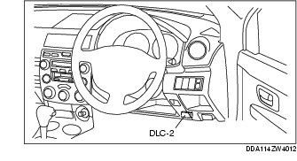
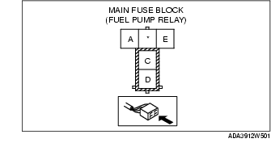

FUEL PUMP UNIT INSPECTION [ZY]
id0114008011c7
Fuel pump Operation Inspection
1. Remove the fuel-filler cap.
2. Start the fuel pump using the following procedure.
Using WDS or equivalent
-
1. Connect the WDS or equivalent to the DLC-2.

-
2. Start the fuel pump using the "FP" simulation function.
Without using WDS or equivalent
-
1. Disconnect the negative battery cable.
-
2. Remove the fuel pump relay.

-
Caution
-
• Short the specified terminal as shortening the wrong terminal of the main fuse block may cause malfunctions.
-
3. Using a jumper wire, short fuel pump relay terminals C and D in the main fuse block.

-
4. Connect the negative battery cable and start the fuel pump.
3. Verify that operation sound is heard from the fuel pump.
-
• If the operation sound cannot be verified, measure the voltage at fuel pump wiring harness-side connector terminal B.
-
- If as specified, inspect the following.
-
• Fuel pump continuity inspection
-
- If not within the specification, inspect the following.
-
• fuel pump relay
-
• Wiring harnesses and connectors between main relay-fuel pump relay-fuel pump
Standard
-
B+ (Ignition switch at ON)
Continuity Inspection
1. Disconnect the negative battery cable.
2. Disconnect the fuel pump unit connector.
3. Inspect for continuity between fuel pump unit connector terminals B and D.
-
• If there is continuity, carry out the "Circuit Open/Short Inspection".
-
• If there is no continuity, replace the fuel pump. (See FUEL PUMP UNIT REMOVAL/INSTALLATION [ZY].)
Circuit Open/Short Inspection
1. Inspect the following wiring harnesses for an open or short circuit. (Continuity check)
Open circuit
-
• If there is no continuity, the circuit is open. Repair or replace the wiring harness.
-
- Fuel pump unit terminal B and fuel pump relay terminal C
-
- Fuel pump unit terminal D and body GND
Short circuit
-
• If there is continuity, the circuit is shorted. Repair or replace the wiring harness.
-
- Fuel pump unit terminal B and body GND
-
- Fuel pump unit terminal D and power supply
Fuel Static Pressure Inspection
-
Note
-
• The fuel static pressure inspection cannot be performed because the pressure regulator is integrated with the fuel pump unit.